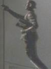

|
Curiosità
|
- Il 4 marzo 2001 è stata diffusa su Internet la copia di un fax inviato ad
una società di casting con la lista dei protagonisti e dei personaggi
principali del pilot. I brani di quel fax possono essere letti nelle pagine
dei personaggi.
- Nel giugno 2000 la Paramount ha registrato il dominio
startrekenterprise.com
- Uno dei motivi per cui è stato omesso «Star Trek» dal titolo della
serie fino all'episodio
Extinction è per evitare di pagare maggiori diritti a
Majel Barrett-Roddenberry.
-
Su
una mensola dell'alloggio del capitano c'è una statuetta raffigurante il
monumento a Zefram Cochrane citato da La
Forge in First Contact (vedi immagine
a lato, lo si vede bene in Strange New World).
- Le riprese della serie vengono effettuate in HDTV 16:9 anziché in
pellicola cinematografica, come le serie precedenti. Anche in Italia gli
episodi sono stati trasmessi in 16:9.
- Nell'ufficio di Archer ci sono quattro quadri che mostrano alcune navi che
hanno portato il nome Enterprise: il veliero Enterprise del 1799
costruito da Henry Spencer, la portaerei Enterprise CVAN-65 39 del
1961, lo space shuttle Enterprise e la
NX-01.
- Nel marzo 2002 la serie ha ricevuto la nomination al ventottesimo Saturn
Award della Academy of Science Fiction, Fantasy & Horror Films nella categoria
Best Network Television Series.
- Nella versione italiana è stata ripristinata la terminologia utilizzata
nel doppiaggio della Serie
Classica e, con essa, tutti gli errori commessi dalla leggerezza dei
traduttori; si salvano solamente i Klingon che sono rimasti tali e non è stato
utilizzato il termine Klingoniani. Benché in originale l'organizzazione a cui
appartiene l'equipaggio dell'Enterprise si chiami Star Fleet, in
italiano il termine è stato inspiegabilmente reso in Flotta Astrale, creando
non poca confusione tra i fan che seguono solamente l'edizione italiana.
- I tricorder utilizzati in questa serie sono molto simili agli iPAQ di
Compaq/HP. Un modello simile di tricorder, oltre a quello tradizionale, è
stato utilizzato in Nemesis.
- Durante la prima trasmissione in Italia, La7 ha seguito l'ordine di
produzione e non quello di trasmissione originale negli USA.
- A partire dall'aprile 2004 la Paramount ha iniziato a criptare i feed
satellitari degli episodi verso le stazioni di trasmissione.
- A partire dal settembre 2004, quando La 7 ha ripreso a trasmettere gli
episodi della seconda stagione in Italia, è stata utilizzata la sigla della
terza stagione in cui compare anche il nome «Star Trek».
- Come la Serie Classica, anche
Enterprise termina con un episodio
singolo.
- Nella primavera del 2005 in occasione della futura ripresa dei voli
degli shuttle, per pubblicizzare l'evento la NASA ha usato come testimonial
Scott Bakula nei panni di Archer.
- Ecco alcune traduzioni di Enterprise:
- Brasile: Enterprise
- Messico: Enterprise, non tradotto con i sottotitoli in spagnolo